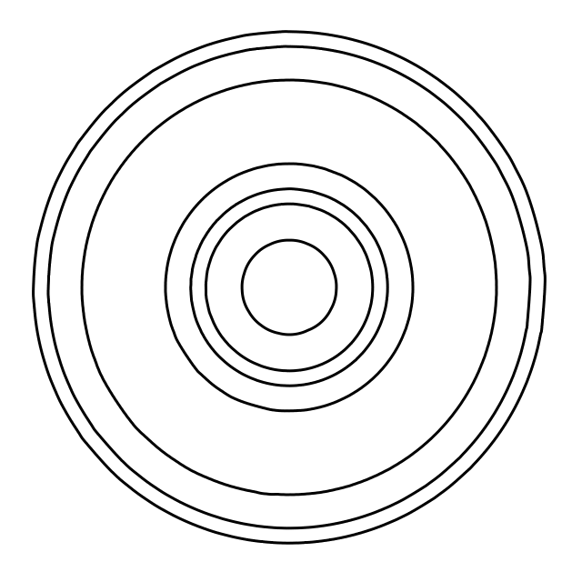

DeadLogs is a tool? Engine? Framework? Templating system? It's whatever one might call it. It's a tool for creating simple sites and/or blogs. Of course, anyone who has the programming knowledge to do so can customize and edit the inner workings to meet their needs.
Why the name 'DeadLogs'? Well, it used to be DeadJournals, but I liked 'logs' better. As for the whole 'dead' thing though... I don't know.
DeadLogs is distributed under the Opinionated Queer License.
TL;DR
| You can: | You can't: | You must: |
|---|---|---|
Basically "Open Source" but with extra steps.
If you have any questions or concerns, contact me here:
deadlogs [at] deadinsideartist [dot] art.